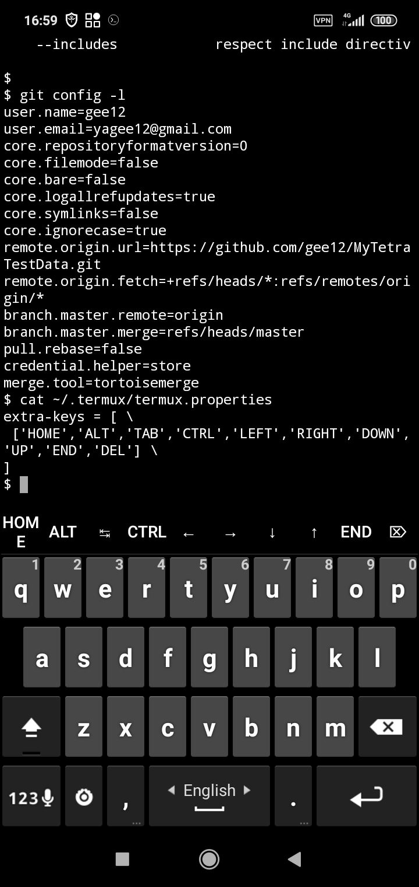
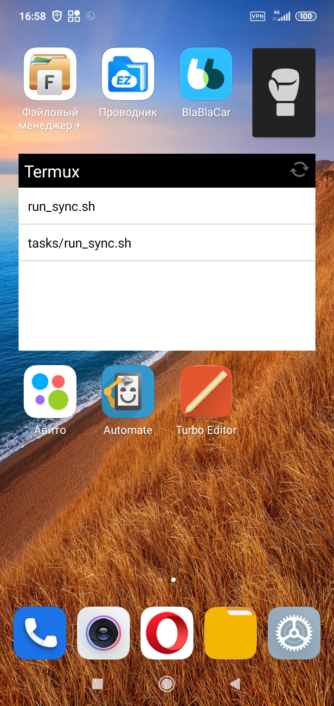

Yes, using the am (activity manager) command:
am start --user 0 -n com.package.name/com.package.name.ActivityName
Example for Termux itself (bring it to foreground when e.g. ssh:ing in to the device):
am start --user 0 -n com.termux/com.termux.app.TermuxActivity
--activity-brought-to-front
Чтобы избавиться от мерж-коммита
git pull --rebase
команды termux
extra-keys = [ \
['HOME','ALT','TAB','CTRL','LEFT','RIGHT','DOWN','UP','END','DEL'] \
]
 